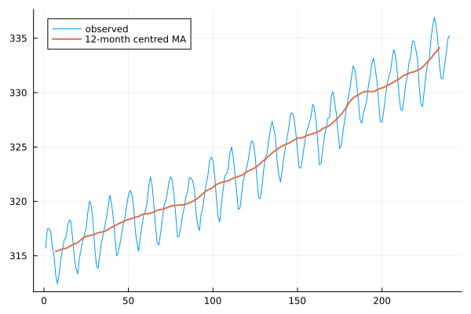
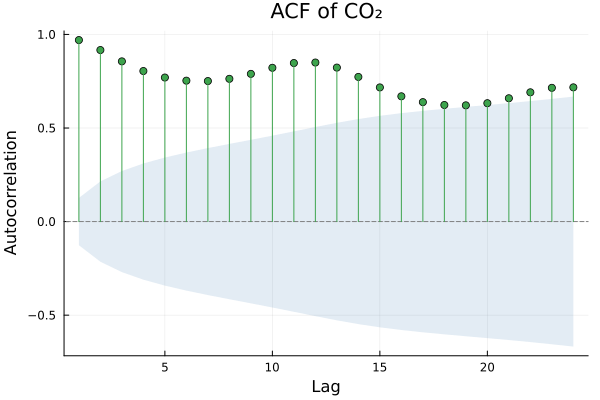
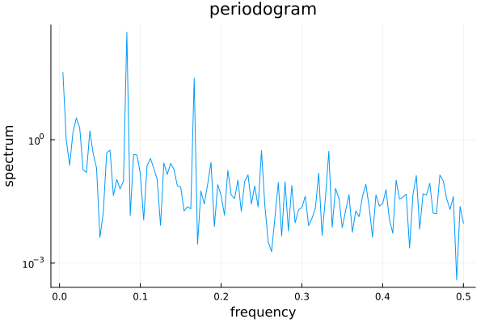

Primitives
The operations everything else is built from: differencing, filtering, autocorrelation, the frequency domain, and variance-stabilising transformations.
Every function here accepts anything tsvalues can be called on — a Vector, a TSFrame column, a DataFrame column. Examples use plain vectors.
using TSAnalytics, Plots
y = dataset("cardox").value[1:240] # monthly CO₂, 20 yearsDifference a series, and undo it
dy = diff(y)
println("original: ", length(y), " differenced: ", length(dy))original: 240 differenced: 239diff takes lag and differences keywords for seasonal and repeated differencing:
d_seasonal = diff(y, 12) # seasonal difference, lag 12
d_both = diff(diff(y, 12), 1) # one seasonal, then one ordinary
println("seasonal: ", length(d_seasonal), " both: ", length(d_both))seasonal: 228 both: 227diffinv inverts it, given the starting values the difference threw away:
back = diffinv(dy; xi=[y[1]])
println("recovered the original exactly: ", isapprox(back, y; atol=1e-9))recovered the original exactly: truexi is the initial condition. Without it diffinv starts from zero and you get the right shape at the wrong level — a common and silent mistake when reversing a differenced forecast.
Apply a moving average
ma = moving_average(y, 12)
println("length: ", length(ma), " first finite value at index: ", findfirst(!isnan, ma))
plot(y; label="observed", legend=:topleft)
plot!(ma; label="12-month centred MA", linewidth=2)
The result is the same length as the input, with NaN at both ends where the window does not fit. A centred even-order average is automatically double-averaged so it stays aligned — the usual 2×12-MA convention for monthly data.
For asymmetric or recursive filtering, use the two lower-level functions directly:
| Function | Computes | Use for |
|---|---|---|
convolution_filter | sum(coef[j] * x[t-j]) | Moving averages, smoothing, any FIR filter |
recursive_filter | x[t] + sum(coef[j] * y[t-j]) | Exponential smoothing, AR-style recursions |
Both keep the argument order and the sides spelling R's stats::filter uses, so a filter specification transfers across without rearrangement.
Autocorrelation
a = acf(y, 1:24)
plot(a; title="ACF of CO₂")
println("first five: ", round.(acf(y, 1:5).values, digits=4))first five: [0.9699, 0.9166, 0.8561, 0.8044, 0.7697]The plot draws the confidence band automatically. By default it is the constant ±1.96/√n band; pass bartlett=true for Bartlett's widening band, which is the more honest one when you are reading a decay rather than testing a single lag.
Partial autocorrelation, and its three methods
println("yw : ", round.(pacf(y, 1:5).values, digits=4))
println("ols : ", round.(pacf(y, 1:5; method=:ols).values, digits=4))yw : [0.974, -0.4743, 0.0413, 0.2319, 0.1718]
ols : [0.9856, -0.7056, 0.4249, 0.3386, 0.0453]Three methods are available and they do not agree on a strongly trending series like this one:
method | What it is |
|---|---|
:yw (default) | Yule-Walker, biased denominator — R's pacf default |
:ywm | Yule-Walker, mean-adjusted denominator |
:ols | Regression-based |
The spread above is not a bug. On a near-unit-root series the Yule-Walker estimator is heavily biased toward zero, and :ols is generally the better choice when you intend to read an order off the result.
R and statsmodels both offer a Burg estimator; this package does not. The error message says so explicitly rather than falling back silently:
pacf(y, 1:5; method=:burg)
ERROR: ArgumentError: method must be :yw, :ywm, or :ols (:burg not yet implemented)Find a period you did not already know
pg = periodogram(y)
i = argmax(pg.spec)
println("peak frequency: ", round(pg.freq[i], digits=5), " → period ", round(1/pg.freq[i], digits=2))
plot(pg; title="periodogram")
The peak lands at frequency 0.08333, which is 1/12 — the annual cycle, recovered without anyone having told the function the data was monthly. This is what the frequency domain is for: the ACF can only confirm a period you already suspected.
A raw periodogram is a noisy estimator no matter how long the series is. spectral_density smooths it with a Daniell kernel:
sd = spectral_density(y, [5])
println("bandwidth: ", round(sd.bandwidth, digits=5), " equivalent df: ", round(sd.df, digits=2))bandwidth: 0.00524 equivalent df: 9.14The span vector controls the smoothing; more spans means a smoother estimate with more degrees of freedom and less resolution. Base R's spec.pgram tapers by default (taper=0.1) and this does not — see Chapter 6 for why that matters when comparing output.
Stabilise a variance
lambda = guerrero_lambda(y, 12)
println("Guerrero lambda: ", round(lambda, digits=4))Guerrero lambda: -0.0031guerrero_lambda picks the Box-Cox parameter that best stabilises variance across seasonal blocks. Near 0 means take logs; near 1 means the series is fine as it is.
Apply it with boxcox, and reverse with boxcox_inv:
yt = boxcox(y, lambda)
println("round-trips: ", isapprox(boxcox_inv(yt, lambda), y; atol=1e-8))round-trips: trueReversing a forecast needs more care than reversing the data — the naive back-transform gives a median rather than a mean. See Chapter 7 for the bias correction.
See also
- Diagnostics — testing what you find here
- Plotting — every result type's recipe
- API: Primitives — full argument lists